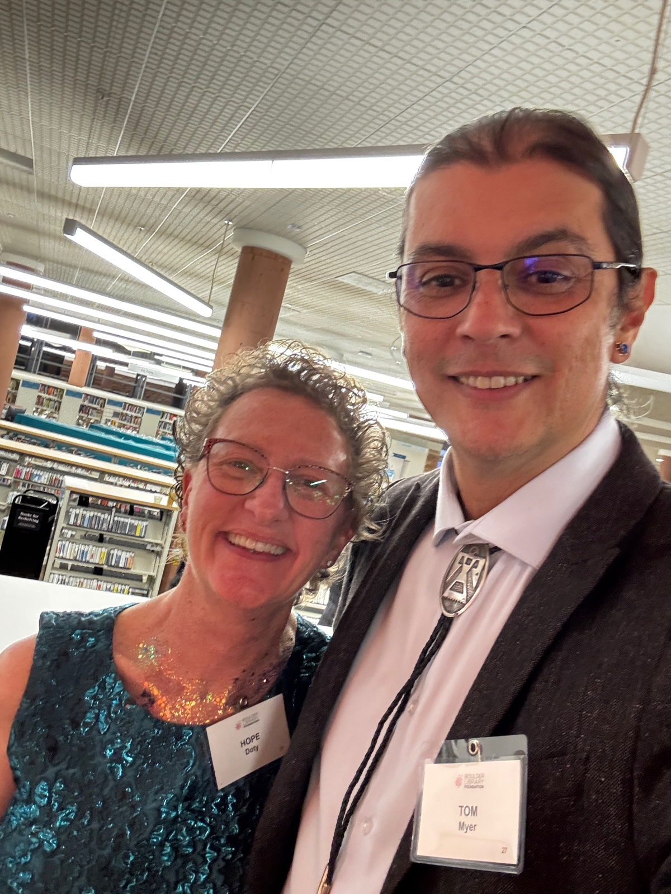

About us.
Rooted in a deep respect for Native cultures, our mission is to empower Native arts and culture along Colorado's Front Range. We are dedicated to creating thriving event spaces that serve as vital platforms for Native artists, speakers, dancers, and cultural experts.
At the heart of our work are the principles that guide us: creating meaningful impact, upholding authenticity in all we do, and demonstrating deep respect for the rich heritage and contemporary expressions of Native cultures. We are committed to building a vibrant and supportive ecosystem where Native arts and culture not only survive but thrive.
Thunder Wolf Native Arts & Culture is a 501(c)3 non-profit organization (EIN 33-4972758).
About Our Founder
Tom Myer is a Gunbarrel-based digital artist of Hodinǫ̱hsǫ́:nih (Haudenosaunee/Iroquois) and Ngäbe-Buglé descent. He's been instrumental in creating Native-centered events on the Front Range: Native Arts Markets and speaker engagements with Arapaho/Cheyenne leaders in Niwot, a tipi raising in Longmont, and upcoming Native events in Lyons and Broomfield.
You might not expect a background in high tech to be the driving force behind an initiative to empower Native arts and culture, but that's precisely the case here. Tom, the heart of our organization, holds undergraduate and graduate degrees in English and has spent the last 27 years contributing to industry leaders like Apple and Google. However, beneath the surface of a successful tech career lies a lifelong and unwavering passion for Native cultures, history, art, and storytelling. This deep-seated interest informs and inspires our mission to create thriving event spaces for Native artists, speakers, dancers, and cultural experts along Colorado's Front Range.
To learn more about his art, visit www.myerman.art.
